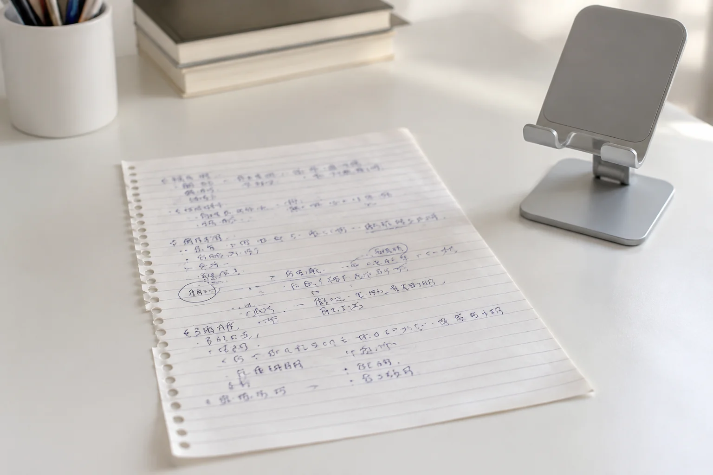

深圳手机拍手写资料开了人像模式，虚化边缘要重新检查
相机把纸面当成主体时，仍可能让部分区域虚化。照片背景好看，不代表整张纸的文字都能读清。

整页检查实际文件
深圳模仿笔迹资料拍摄后，应查看相机保存的图片，而不只看取景框。页面四角、边缘和末行都要检查；中心清楚不意味着其他位置同样清晰。需要补拍时尽量保持纸张平整、镜头平行，原图和补图分别编号，避免覆盖后忘记哪一份曾经过处理。有些手机保存了可调整的景深版本，也可能只剩导出的照片。是否还能恢复要根据实际文件核实，不承诺用后期软件一定找回被虚化的字。
落款常在边缘区域
模仿签名、模仿签字参考位于纸角时，容易刚好落在虚化范围。局部可以补拍，但应保留完整姓名及周围栏位，并注明原页位置。不从另一张签写图借用清楚的部分，拼接后的姓名虽然好读，却不再是原来一次完整落款。
原图与阅读版区分
笔迹鉴定资料目录可说明相机模式、是否转发和是否做过增强，不能确认的项目留待核实。把虚化图导出成更大尺寸，不等于恢复失去的细节。先确认还能不能找到未经处理的原文件，再决定需要补什么图，比不断尝试锐化更直接。